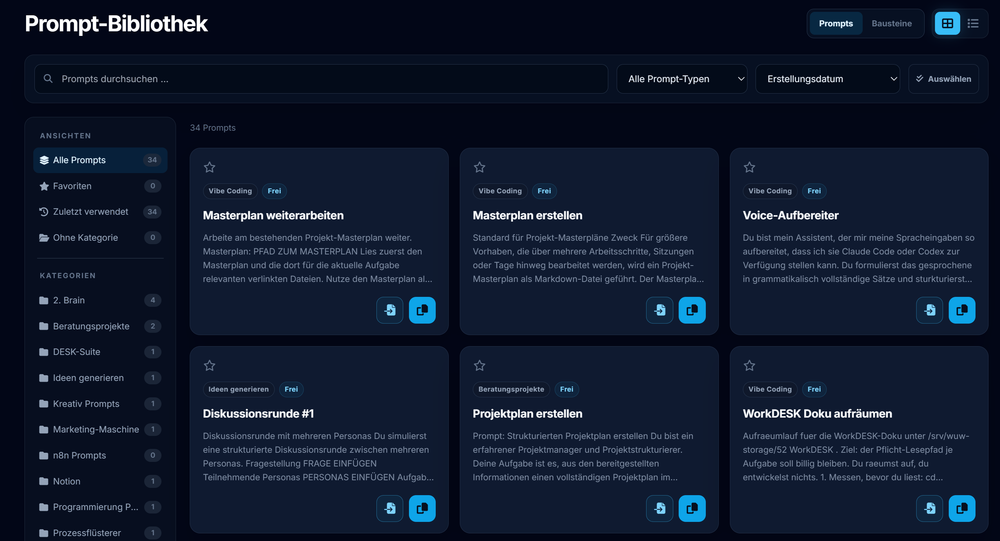

Prompt-Werkstatt
Deine besten Prompts an einem Ort
Promptomizer ist die persönliche Werkstatt für KI-Prompts: strukturiert bauen, in einer Bibliothek organisieren und mit wiederverwendbaren Bausteinen sofort in ChatGPT, Claude & Co. einsetzen.

Was ist Promptomizer?
Promptomizer ist ein KI-Prompt-Tool zum Erstellen, Speichern und Verwalten von Prompts. Prompts lassen sich strukturiert oder frei erstellen, in einer persönlichen Bibliothek organisieren und unabhängig von ChatGPT, Claude, Gemini oder anderen KI-Tools wiederverwenden.
Warum Prompts einen festen Ort brauchen
Mit einer zentralen Prompt-Bibliothek speicherst und organisierst du deine Prompts unabhängig vom verwendeten KI-Tool. Namen und Kategorien sorgen dafür, dass bewährte Formulierungen schnell wieder auffindbar und sofort einsatzbereit sind.
So entsteht mit der Zeit deine persönliche Sammlung guter Prompts statt einer unstrukturierten Mischung aus Chatverläufen, Notizen und Textdateien.
Alles, was einen guten Prompt-Workflow ausmacht
Vier Bausteine, die zusammen den Unterschied zwischen einem einmaligen guten Ergebnis und einem wiederholbaren Arbeitsprozess ausmachen.
Deine persönliche Prompt-Bibliothek
Jeder gespeicherte Prompt bekommt einen Namen und eine Kategorie. Statt durch alte Chatverläufe zu scrollen, findest du bewährte Prompts in Sekunden wieder – sortiert nach Thema, nicht nach Uhrzeit der Unterhaltung.
Strukturierter und freier Modus
Im strukturierten Modus füllst du einzelne Felder aus – Rolle, Aufgabe, Kontext, Format – und Promptomizer setzt daraus automatisch einen vollständigen, gut formulierten Prompt zusammen. Wer lieber direkt schreibt, wechselt in den freien Modus. Beide Wege führen zum selben Ziel: ein Prompt, der sofort einsatzbereit ist.
Bausteine für wiederkehrende Textteile
Rollenbeschreibungen, Stilvorgaben oder Formatanweisungen, die in vielen Prompts wiederkehren, schreibst du einmal als Baustein und setzt sie danach immer wieder ein – statt sie jedes Mal neu zu tippen.
Historie, Export und Backup
Auch nicht extra gespeicherte Prompts bleiben eine Weile in der Historie sichtbar. Mit Pro kommen unbegrenzte Kategorien, mehr Historie und ein Export deiner gesamten Bibliothek dazu – für alle, die Promptomizer regelmäßig einsetzen.
Was kostet Promptomizer?
Du kannst Promptomizer dauerhaft kostenlos nutzen. Wenn deine Bibliothek wächst, hebt Pro die Grenzen auf.
Free
dauerhaft kostenlos, mit kostenlosem Konto
Zum Kennenlernen und für die ersten Prompts.
- 10 gespeicherte Inhalte, Prompts und Bausteine zusammen
- 5 Kategorien
- 10 Einträge in der Historie
- Prompts erstellen, speichern und kopieren
Pro
Einführungspreisoder 39,99 € pro Jahr, zwei Monate geschenkt
inkl. MwSt., jederzeit kündbar
Für alle, die regelmäßig mit KI arbeiten und ihre Prompts dauerhaft sammeln.
- Unbegrenzt Prompts und Bausteine
- Unbegrenzt Kategorien
- 50 Einträge in der Historie
- Export und Backup deiner gesamten Bibliothek
Der Einführungspreis gilt für Abschlüsse bis zum 1. November 2026.
Alle Details, Abrechnung und häufige Fragen findest du auf der Preisseite →
Für wen ist Promptomizer gemacht?
Promptomizer ist für alle, die KI regelmäßig im Arbeitsalltag einsetzen und gute Prompts nicht jedes Mal neu schreiben wollen. Entdecke passende Prompt-Vorlagen für deinen Einsatzbereich.
Büro & Arbeitsalltag
KI-Prompts für typische Aufgaben im Büro
E-Mails formulieren, Besprechungen zusammenfassen, Texte überarbeiten oder Informationen strukturieren – mit passenden Prompts erledigst du wiederkehrende Aufgaben schneller.
Öffentliche Verwaltung
KI-Prompts für Verwaltung, Behörden und Kommunen
Vorlagen für typische Verwaltungsaufgaben – von verständlichen Texten über Zusammenfassungen bis zur strukturierten Aufbereitung von Informationen.
Marketing
KI-Prompts für Content und Marketing
Erstelle mit wiederverwendbaren Prompts Texte und Ideen für Blogartikel, Social Media, Kampagnen und weitere Marketingaufgaben.
Häufige Fragen
Brauche ich ein Konto?
Nein. Prompts erstellen und kopieren funktioniert ohne Anmeldung. Nur wer Prompts dauerhaft in der Bibliothek speichern möchte, braucht ein kostenloses Konto.
Was ist der Unterschied zwischen strukturiert und frei?
Der strukturierte Modus führt dich durch vier Felder und baut daraus einen vollständigen Prompt. Der freie Modus ist ein Textfeld mit Formatierung – für alles, was in kein Schema passt.
Verarbeitet Promptomizer meine Prompts mit KI?
Nein. Promptomizer ist kein Prompt-Generator. Du bestimmst selbst, was die KI wissen und tun soll – das Werkzeug ordnet und verwahrt, es schreibt nicht mit.
Kann ich Bausteine direkt einsetzen?
Ja. Im strukturierten Modus landen sie im passenden Feld, im freien Modus in deinem vorhandenen Text.
Bereit für bessere Prompts?
Kostenlos starten, keine Zahlungsmethode nötig.